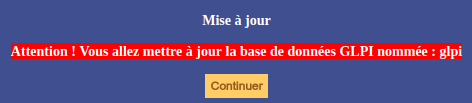
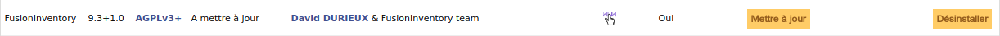

Mises à jour
Mise à jour de GLPI
Les versions de GLPI et de FusionInventory sont très liées. Il faut d'abord mettre à jour GLPI. Pour cela, se rendre dans Administration > Maintenance et sauvegarder la base de données en SQL. Puis dans /var/www/glpi créer un dossier "ancien" et y glisser tous les dossiers et fichiers contenus dans /var/www/glpi à l'exception du dossier "plugins". Après le téléchargement de la dernière version, extraire le dossier dans /var/www/glpi et se connecter à localhost/glpi. Suivre les étapes en sélectionnant "Mettre à jour" puis choisir la base de données à utiliser.

Mise à jour de FusionInventory
La mise à jour de GLPI est terminée, celle de FusionInventory peut être traitée. Tout d'abord, télécharger la dernière version sur le Git et la décompresser dans le dossier /var/www/glpi/plugins/. Puis se rendre sur GLPI et dans Administration > Plugins puis mettre à jour FusionInventory.

Mise à jour des agents
Mise à jour
Concernant la mise à jour des agents, celle-ci peut se faire via une tâche de déploiement. Les agents seront remplacés par la nouvelle version au prochain inventaire de l’ordinateur. Un script, fourni par la communauté à cette adresse, permet de remplacer l’ancienne version de l’agent. Il est nécessaire de paramétrer le script avec les versions de l’agent et de Windows grâce aux différentes variables Setup.
Sous Linux, il est possible d'exécuter la commande : sudo apt-get install fusioninventory-agent.
Suppression
Pour Linux, l'exécution de sudo apt purge fusioninventory-agent supprimera l'agent installé et tous ses fichiers de configuration.
Sous Mac, l'exécution de sudo /opt/fusioninventory-agent/uninstaller.sh permettra de supprimer l'agent installé.
Windows permet quant à lui la désinstallation via le panneau de configuration, dans l'option "désinstaller programme".